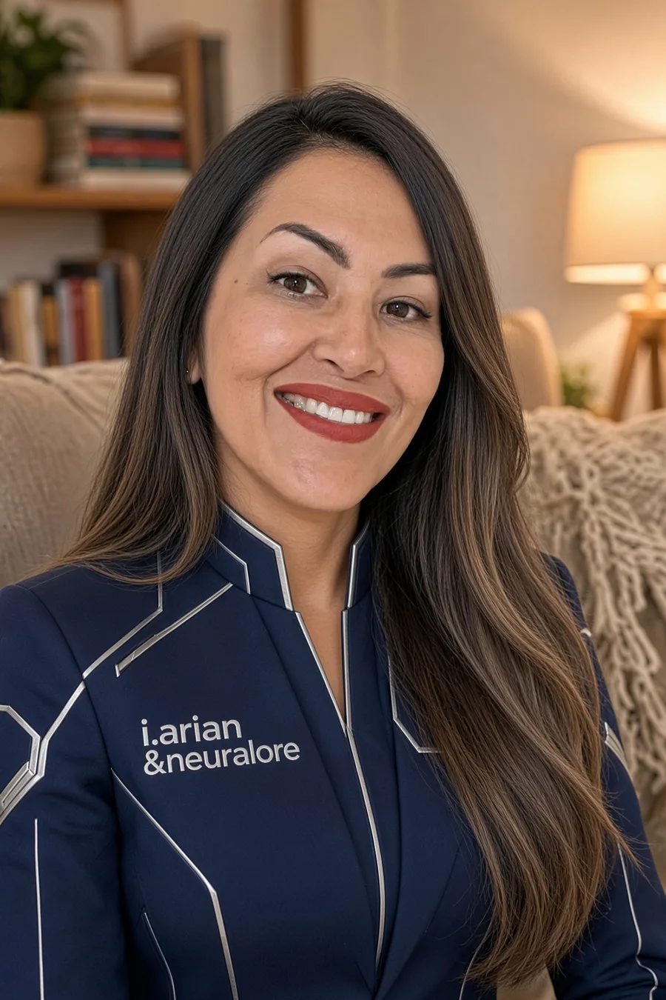

Aracaju · Sergipe · Brasil — visão internacional
Inteligência artificial que trabalha. Imagem que convence.
A I.ARIAN coloca equipes de agentes de IA para trabalhar na sua empresa. A NEURALLOREE Filmes cria filmes, avatares e campanhas com inteligência artificial. E, com um parceiro de exportação em Bali, abrimos uma ponte de importação entre a Indonésia e o Brasil.
Agentes de IA · Filmes com IA · Drones DJI · Importação Indonésia → Brasil
O ponto de partida
Comprar tecnologia é fácil. Difícil é fazê-la funcionar no dia a dia.
Toda empresa que pensa em IA esbarra nas mesmas perguntas:
- O que dá para automatizar sem perder o atendimento humano?
- Meus dados e os dos meus clientes ficam protegidos?
- Quem cuida quando algo sai do roteiro?
- Como transformar a ferramenta em resultado e em imagem?
Nós montamos, testamos e acompanhamos. Você decide.
Um grupo, três frentes
Duas empresas. Uma só equipe — de pessoas e de agentes.
Automação e agentes de IA
Equipes de agentes que atendem, agendam, organizam e acompanham — com segurança e LGPD.
NEURALLOREE Filmes
Filmes e comerciais com IA, atores e avatares digitais, drones e conteúdo vertical.
Nova frenteImportação Indonésia → Brasil
Café torrado e cacau de Sulawesi para a indústria, com um parceiro de exportação em Bali.
I.ARIAN
Bots que fazem, não só falam.
Automação para empresa e rotina. A I.ARIAN implanta equipes de agentes de inteligência artificial que executam tarefas reais — e encaminham à sua equipe o que pede julgamento humano.
Nós trabalhamos assim todos os dias: a nossa própria operação roda com agentes especializados. É essa experiência que levamos para a sua empresa.
Sua equipe de IA
WhatsApp pela API oficial da Meta e automações em n8n.
Implantação
Mapeamos processos, desenhamos os agentes, integramos às suas ferramentas e testamos antes de entrar no ar.
Seu Jarvis pessoal
No pacote Premium, além da equipe da empresa, você recebe uma secretária de IA própria para e-mail, agenda e rotina — a mesma lógica que usamos internamente.
Acompanhamento
Ajustes, relatórios e evolução contínua. Os agentes ajudam; quem decide é você.
Segurança e LGPD
Implantamos IA com segurança.
Criminosos também usam inteligência artificial. Por isso, cada projeto nasce com proteção desde o primeiro dia:
- Menor acesso possível para cada agente
- Verificação em duas etapas e cofre de senhas
- Atualizações rápidas e nada de plugin desconhecido
- Cópias de segurança e registro do que cada agente faz
- Dados sob o controle de quem contrata, conforme a LGPD (Lei 13.709/2018), e sem uso para treinar modelos públicos
NEURALLOREE Filmes
Filmes com inteligência artificial, para qualquer segmento.
Comerciais e institucionais
Do roteiro ao filme final, para a marca, o produto ou o serviço — em qualquer tema do seu segmento.
Atores e avatares de IA
Porta-vozes digitais para treinamentos, apresentações e campanhas, sempre identificados como conteúdo de IA.
Drones DJI com ActiveTrack
Tomadas aéreas que acompanham pessoas e veículos: obras, empreendimentos e lançamentos imobiliários.
Conteúdo vertical
Reels, Shorts e Status em 9:16, com legenda palavra a palavra e áudio no padrão das plataformas.
Do storyboard à entrega
- Briefing
- Roteiro
- Storyboard
- Geração e captação
- Edição, trilha e voz
- Revisão humana
- Entrega
Cenas geradas por IA saem com o selo “imagens ilustrativas”. Texto na tela é sempre composto por código, sem letras deformadas.
Filmes e livros personalizados
Quando a estrela da história é quem você ama.

Fotos usadas apenas para o pedido e excluídas após a entrega, conforme a LGPD.
REBORNThe Serpent's Wake
Prova de capacidade
BLOOD REBORN: THE SERPENT'S WAKE
Um livro de quase 500 páginas sobre mitos folclóricos e a história da Ucrânia e da região, ilustrado com cenas de IA fiéis ao texto.
Um ano de edição diária, em parceria internacional. É o mesmo rigor que aplicamos em cada filme: a cena serve ao texto, não o contrário.
Importação Indonésia → Brasil
Da origem, na Indonésia, até a sua empresa no Brasil.
Com um parceiro de exportação sediado em Bali, representamos no Brasil o fornecimento de produtos indonésios — o parceiro cuida da origem, e nós do comprador brasileiro, da conformidade e da comunicação.
 imagem ilustrativa
imagem ilustrativaCafé torrado
Cafés indonésios torrados de origens tradicionais, como Sumatra (Gayo), Java e Toraja, para cafeterias, torrefações e varejo especializado.
Disponibilidade confirmada por pedidoCacau de Sulawesi
Amêndoas de cacau de Sulawesi destinadas à industrialização no Brasil, com tratamento fitossanitário na origem.
Somente para indústriaMóveis e decoração
Peças indonésias para projetos de interiores, hotelaria e varejo.
Em breveTransparência regulatória
O que pode — e o que não pode — entrar no Brasil.
Preferimos dizer antes. Cada produto passa pelas regras do Ministério da Agricultura (MAPA) e da Receita Federal.
NCM 0901.21Viável Categoria de risco 1. Alíquota de importação de 0% para café torrado não acondicionado em cápsulas (alíquota geral de 9%).Lista de categoria de risco do MAPA; Resolução Gecex 709/2025
origem IndonésiaCondicionado Admitido somente de Sulawesi, embarcado pelos portos de Makassar ou Pantoloan, com tratamento com fosfina e sem revenda antes do processamento industrial.IN SDA 72/2003, alterada pela IN 47/2011
origem IndonésiaNão oferecemos Sem via de importação autorizada: a Indonésia não consta da lista de produtos vegetais com importação autorizada (PVIA) para café verde.IN MAPA 25/2020; consulta PVIA de 20/11/2026
Informações de referência, sujeitas a atualização das normas. Cada operação é conferida caso a caso antes da proposta.
Como trabalhamos
Um caminho claro, do primeiro contato à entrega.
- 01
Escuta
Entendemos a empresa, o objetivo, o prazo e as regras do seu setor.
- 02
Proposta
Desenhamos a solução — agentes, filme ou importação — com escopo e etapas por escrito.
- 03
Produção
Agentes configurados e testados, filmes roteirizados e revisados, cargas conferidas na origem.
- 04
Conformidade
LGPD, CFM, MAPA e documentação: checamos antes, não depois.
- 05
Entrega e acompanhamento
Colocamos no ar, entregamos na porta e seguimos ao seu lado.
Na importação, porta a porta
Nós orientamos e executamos. Você toma a decisão comercial.
Estrutura
Equipamento de ponta, a serviço do projeto.
Mac M5
Edição, finalização e IA local com folga de desempenho.
Drones DJI
Captação aérea com ActiveTrack para obras e empreendimentos.
Projetor 4K
Apresentações e exibições em tela grande, com áudio JBL.
Tradução em 200 idiomas
Fones tradutores para reuniões internacionais em 200 idiomas e dialetos.
Para clínicas e consultórios
Rigor de saúde. Sem promessas milagrosas.
Agentes que atendem, agendam, confirmam e lembram retornos — e que nunca diagnosticam, prescrevem ou orientam tratamento. Toda dúvida clínica vai direto para a equipe da casa.
- Dados de saúde tratados como dados sensíveis (LGPD, art. 11)
- Comunicação dentro das regras de publicidade médica do CFM
- Sem antes e depois, sem garantia de resultado, sem sensacionalismo
- Registro do que o agente responde e revisão periódica

Quem lidera
Carla Mecenas
CEO · I.ARIAN & NEURALLOREE Filmes
À frente das duas empresas, Carla une visão internacional e base em Aracaju para levar automação, inteligência artificial e produção audiovisual a empresas de todo o Brasil.
Na prática, ela trabalha todos os dias com a própria equipe de agentes de IA — e é essa rotina, testada no dia a dia, que serve de modelo para cada projeto entregue.
Agende uma reuniãoContato
Vamos conversar sobre o seu projeto?
Conte o que você precisa. Retornamos para agendar uma reunião e entender se somos a parceira certa.
Aracaju · Sergipe · Brasil
Dúvidas comuns
Perguntas frequentes
Os agentes de IA substituem a minha equipe?
Não. Eles cuidam do repetitivo — atender, agendar, confirmar, organizar — e encaminham para pessoas tudo o que pede julgamento. Quem decide continua sendo a sua equipe.
Como os dados da minha empresa são protegidos?
Os dados ficam sob o controle de quem contrata, com acesso mínimo para cada agente, verificação em duas etapas, cofre de senhas e cópias de segurança, conforme a LGPD. Não usamos esses dados para treinar modelos públicos.
O que é o Jarvis pessoal do pacote Premium?
Uma secretária de IA exclusiva para você: organiza e-mails, agenda e lembretes da sua rotina, além da equipe de agentes da empresa.
Vocês atendem fora de Aracaju?
Sim. Agentes, filmes e conteúdos digitais são entregues em todo o Brasil; captação com drone é combinada conforme o local.
Os filmes deixam claro que usam IA?
Sim. Cenas geradas por inteligência artificial levam o selo “imagens ilustrativas”, e todo material passa por revisão humana antes da entrega.
Vocês importam café verde da Indonésia?
Não. Hoje não há via de importação autorizada pelo MAPA para café verde de origem indonésia. Trabalhamos com café torrado e com cacau de Sulawesi destinado à indústria.
Posso revender o cacau importado?
Não antes do processamento. Pela regra do MAPA, o cacau indonésio admitido no Brasil deve seguir para industrialização.
Vocês informam preços pelo site?
Não. Cada projeto e cada operação de importação tem escopo próprio. Os valores são apresentados em proposta, depois da reunião.
E os móveis e a decoração?
Essa linha está em preparação com a parceira na Indonésia. Deixe seu contato para ser avisado quando abrir.